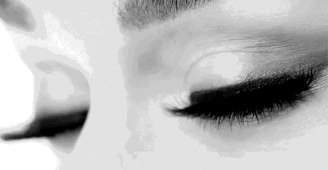

Lash It Up
A Speaker's Guide to Being Extra
Jennifer Wadella
- Full time Remote JavaScript Developer
- Part time basic bitch
- Lashionista
The Secret to Great Speaker Photos

Why Do Lashes Make Such an Impact?
- Long(healthy) eyelashes signal overall health
- Create the illusion of larger eyes
- Aesthetically create contrast on the face
"Wtf, Jennifer, you run a women in tech org, isn't telling women to wear fake eyelashes to look good sexist?"
- Naw, I want to look good for ME.
- Women get criticized for wearing too MUCH makeup,
too little makeup, so we really can't win. Just have fun.
- Bitch I can be woke AND have fabulous lashes
- thank u, next
Lash Types
lol wat is this, typescript?
Moar Lash types
- Style - cateye, natural, full, drag queen
- Curl - "J" or "C"
- Material - synthetic, mink, sable, fox, silk
Application
- Apply small dot of glue to indiviual lash, let dry for 15 seconds, apply to lash line.
- Apply thin layer of glue to full lash line and let dry for 30 seconds
- Start lash from where your inner lashes start
- Apply lash to the top of your natural lashes along your eyelid
- Use tweezers to gently press the falsies against your natural lashes while the glue dries
- Coat with mascara to blend natural and false lashes together
Demo Time!
Ya'll think live coding hard, try live lashing!
Tips & Tricks
- Do your eyeliner first.
- Use a lash applicator
- Trim lashes to match your eyes
- Always let the glue dry a bit so it's tacky instead of slimy
- Look down into mirror
- Embrace your inner Cardi B
- Just like coding - PRACTICE!
Lashionista Thought leaders